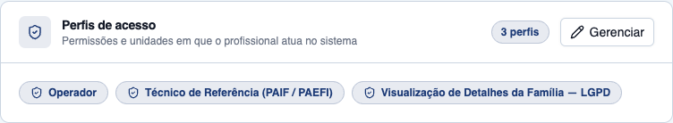
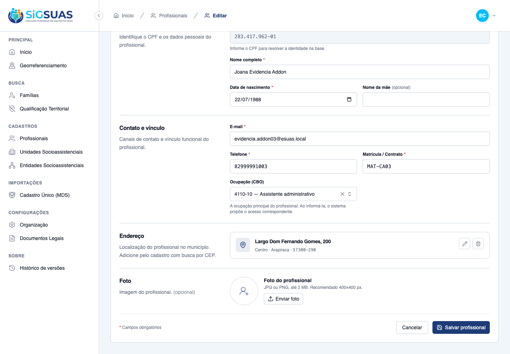
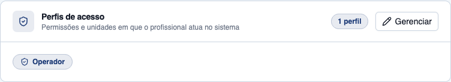
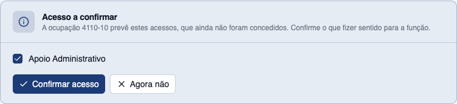
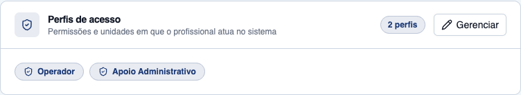
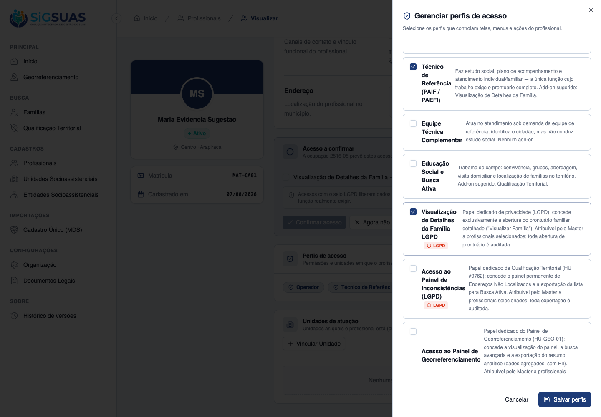
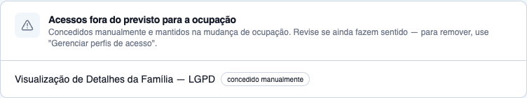
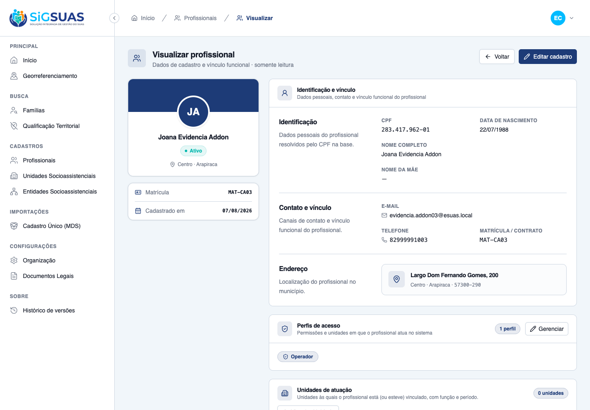

8 critérios de aceite, todos atendidos: 5 evidenciados dirigindo o frontend do tenant no navegador (CA01, CA02, CA04, CA06, CA07), 2 combinando navegador e suíte automatizada (CA03 e CA08) e 1 exclusivamente automatizado (CA05, que exige autenticar como o próprio profissional). A suíte Pest da feature roda 19 testes com 87 asserções, todos passando. O reprocessamento assimétrico foi confirmado ponta a ponta: a perda é aplicada no ato da alteração, o ganho só existe depois que o Master confirma. Um achado de usabilidade fora do escopo dos CAs — a tela de edição não exibe a ocupação atual do profissional, por falta de eager load de 'cbo' no show — está documentado em achado-ocupacao-nao-exibida-na-edicao.txt e não reprova nenhum critério.
| CA | Critério | Status |
|---|---|---|
| CA01 | Perda derivada do mapa é revogada de imediato | ATENDIDO · navegador |
| CA02 | Ganho é apresentado como sugestão, não concedido | ATENDIDO · navegador |
| CA03 | Add-on LGPD que sai do mapa é revogado sem confirmação | ATENDIDO · navegador + automatizado |
| CA04 | Acesso concedido manualmente é preservado e sinalizado | ATENDIDO · navegador |
| CA05 | Autoalteração de ocupação não amplia acesso | ATENDIDO · automatizado |
| CA06 | Novo CBO sem entrada no mapa | ATENDIDO · navegador |
| CA07 | Posto base sobrevive a qualquer mudança de ocupação | ATENDIDO · navegador |
| CA08 | Reprocessamento fica registrado na trilha de auditoria | ATENDIDO · navegador + automatizado |
Critério (Gherkin): Dado um profissional com CBO "2516-05" e o perfil "Técnico de Referência" concedido pelo mapa, e que o grant desse papel tem origin = 'suggested', quando o Master altera o CBO para "4110-10" (Assistente administrativo), então o papel pf_tecnico_referencia é revogado no ato, sem confirmação, o user_tenant_role correspondente deixa de existir no tenant ativo, o grant recebe revoked_at preenchido (não é apagado — RN11) e uma nova requisição do profissional a person-search.index é recusada com 403.
Como foi testado: Autenticado como Master, abrir o profissional cadastrado com o CBO 2516-05 (3 perfis: Operador, Técnico de Referência e o add-on LGPD, todos com origin = suggested). Editar, trocar a ocupação para 4110-10 — Assistente administrativo, salvar, e reabrir a tela de detalhe.



Critério (Gherkin): Dado o mesmo profissional do CA01, cujo novo CBO "4110-10" corresponde a "Apoio Administrativo", quando a alteração é salva, então NENHUM papel novo é concedido (nenhum user_tenant_role criado), GET .../access-review retorna a sugestão pendente com pf_apoio_administrativo preselected=true, e o acesso só passa a existir quando o Master chamar .../access-review/confirm.
Como foi testado: Na tela de detalhe do mesmo profissional, observar o painel Acesso a confirmar logo após a alteração; conferir que Perfis de acesso ainda mostra só o Operador; então clicar Confirmar acesso e reconferir.


Critério (Gherkin): Dado um profissional com CBO "2515-30" e o add-on family_viewer concedido pelo mapa, quando o CBO é alterado para "4221-05" (Recepcionista), cujo perfil não sugere esse add-on, então family_viewer é revogado de imediato, o usuário deixa de ter a permissão families.view-details e uma nova tentativa de abrir o prontuário familiar completo é recusada.
Como foi testado: O caso foi exercitado na mesma transição do CA01 — o profissional tinha family_viewer derivado do mapa do CBO 2516-05 e passou para 4110-10, cujo perfil (Apoio Administrativo) não prevê o add-on. Transição equivalente à do enunciado: perfil de origem com o add-on → perfil de destino sem ele. A recusa efetiva da permissão é coberta pelo teste Pest "CA03: add-on LGPD derivado do mapa e revogado de imediato".
Critério (Gherkin): Dado um profissional com CBO "2235-05" (Enfermeiro) e que o Master lhe concedeu MANUALMENTE o add-on family_viewer (origin = 'manual'), que o perfil "Equipe Técnica Complementar" não sugeria, quando o CBO é alterado para "4110-05" (Auxiliar de escritório), então family_viewer PERMANECE concedido e GET .../access-review lista esse papel em divergences, identificado como acesso manual não previsto para a ocupação atual.
Como foi testado: Em um profissional com CBO 2516-05 (Operador + Técnico de Referência, ambos suggested), abrir Gerenciar perfis e conceder manualmente o add-on Visualização de Detalhes da Família — LGPD (o drawer grava origin = manual — retrofit da DÍVIDA-01). Em seguida, editar e trocar a ocupação para 4110-05 — Auxiliar de escritório.


Critério (Gherkin): Dado um profissional com CBO "2524-05" e o perfil "Gestão do Trabalho" concedido pelo mapa, quando ele altera o PRÓPRIO CBO para "2516-05" (Assistente social), então pf_gestao_trabalho é revogado de imediato, nenhum acesso novo é concedido, family_viewer aparece apenas como sugestão com preselected = FALSE, e uma nova tentativa dele de abrir o cadastro de Profissionais é recusada.
Como foi testado: Critério que exige autenticar como o próprio profissional (não o Master) e observar a perda de acesso na sequência — cenário de escalonamento de privilégio, coberto pelo teste Pest "CA05: alterar a propria ocupacao revoga e NAO concede nada", que exercita exatamente a transição 2524-05 → 2516-05 com o profissional como causer. É a razão de ser da assimetria da HU: se o ganho fosse automático, existiria o caminho "Analista de RH altera o próprio CBO → ganha o perfil técnico → abre prontuário familiar", sem Master nenhum no caminho.
Evidência por cobertura automatizada — ver Anexo.
Critério (Gherkin): Dado um profissional com CBO "2516-05" e perfil concedido pelo mapa, quando o Master altera o CBO para "5153-20" (Conselheiro tutelar), sem entrada no mapa, então todos os papéis com origin = 'suggested' são revogados (exceto o posto base), nenhuma sugestão é apresentada (suggestion.roles vazio), has_mapping = false e a mensagem informa que a ocupação não possui perfil sugerido.
Como foi testado: No mesmo profissional (já com pf_apoio_administrativo derivado do CBO 4110-10), trocar a ocupação para 5153-20 — Conselheiro tutelar, que não tem entrada no mapa da HU #10343. Reabrir o detalhe e consultar GET .../access-review.

Critério (Gherkin): Dado um profissional com qualquer CBO mapeado, quando o CBO é alterado para qualquer outro, mapeado ou não, então o papel operador PERMANECE concedido e o profissional continua acessando Início, Novidades e Documentos Legais.
Como foi testado: Verificado em todas as transições exercitadas neste dossiê: 2516-05 → 4110-10 (mapeado → mapeado), 4110-10 → 5153-20 (mapeado → sem mapa) e 2516-05 → 4110-05 (com papel manual no meio). Em cada uma, conferir user_tenant_role e o grant do posto base.
Critério (Gherkin): Dado que o Master altera o CBO de um profissional de "2516-05" para "4110-10", quando a alteração é salva, então activity_log grava event = "cbo_access_reprocessed" com causer (quem alterou), tenant_id, subject (o profissional), previous_cbo_code, new_cbo_code, revoked[], suggested[], preserved_manual[] e created_at; os grants revogados permanecem consultáveis com revoked_at (não são apagados); e nenhum CPF ou nome completo aparece em texto livre.
Como foi testado: Inspeção direta de activity_log após cada uma das três transições, e de professional_role_grants para confirmar que a revogação marca em vez de apagar. Reforçado pelos testes Pest "CA08: registra o reprocessamento…" e "CA08: nenhuma PII em texto livre na trilha do reprocessamento".
Evidência por cobertura automatizada — ver Anexo.
PASS Tests\Feature\Api\Client\CboAccessReprocessingTest ✓ it CA01: revoga de imediato o papel derivado que nao pertence ao no… 0.56s ✓ it CA01: o profissional deixa de ter a permissao do papel revogado 0.04s ✓ it CA02: o que o novo CBO traria NAO e concedido, vira sugestao pen… 0.05s ✓ it CA02: o acesso so existe depois que o Master confirma 0.05s ✓ it CA02: confirmar papel FORA da sugestao vigente e recusado 0.04s ✓ it CA03: add-on LGPD derivado do mapa e revogado de imediato 0.04s ✓ it CA04: papel MANUAL e preservado e vira divergencia 0.05s ✓ it CA04/RN06: a divergencia some sozinha se o novo mapa passar a pr… 0.04s ✓ it CA05: alterar a propria ocupacao revoga e NAO concede nada 0.05s ✓ it CA06: novo CBO sem mapa revoga o derivado e nao sugere nada 0.04s ✓ it CA07: o posto base NUNCA e revogado pelo reprocessamento 0.04s ✓ it CA08: registra o reprocessamento com ocupacao anterior, nova, re… 0.04s ✓ it CA08: nenhuma PII em texto livre na trilha do reprocessamento 0.04s ✓ it RN13: profissional LEGADO (sem origem registrada) nao tem papel… 0.04s ✓ it RN09: dispensar a sugestao a oculta ate a ocupacao mudar de novo 0.06s ✓ it RN01: salvar sem mudar a ocupacao NAO dispara reprocessamento 0.03s ✓ it RN12/CA07 isolamento: access-review de outro tenant responde 404 0.03s PASS Tests\Feature\Permissions\ProfessionalAccessReviewMasterOnlyTest ✓ it keeps professionals.access-review master-only 1.14s ✓ it keeps permission coverage green (no authenticated route without… 0.02s Tests: 19 passed (87 assertions) Duration: 2.49s